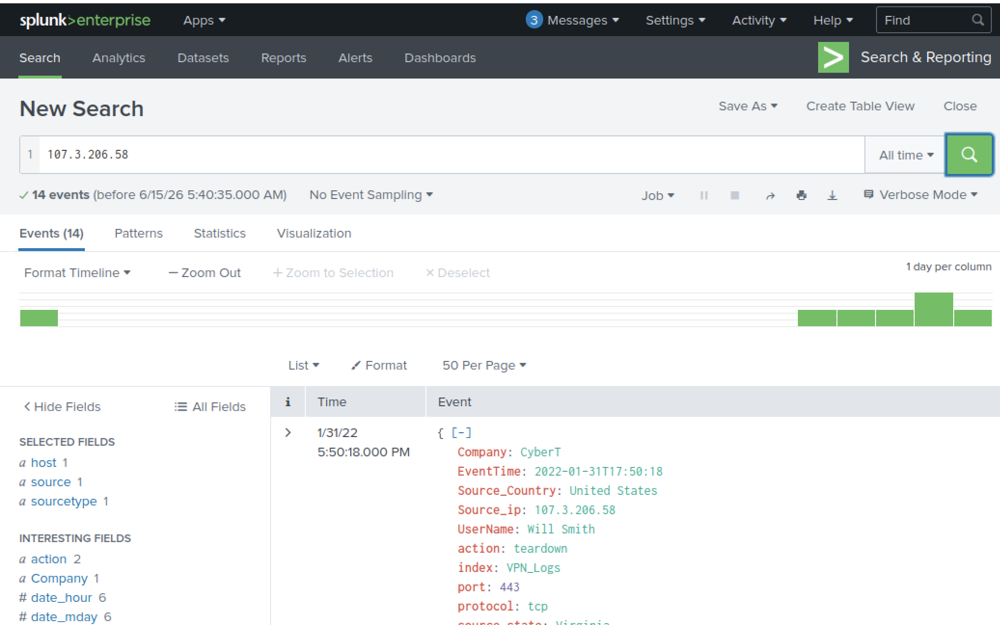
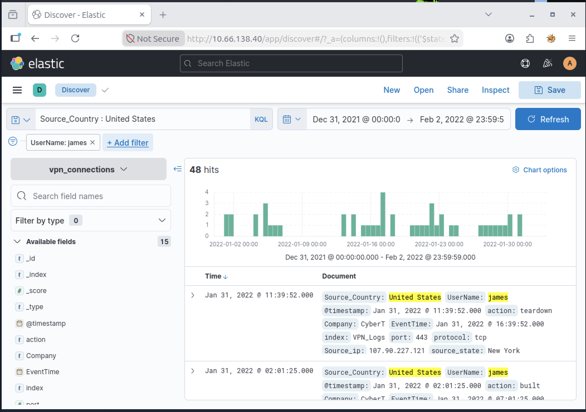
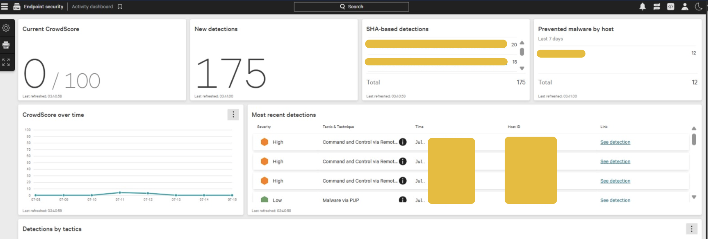
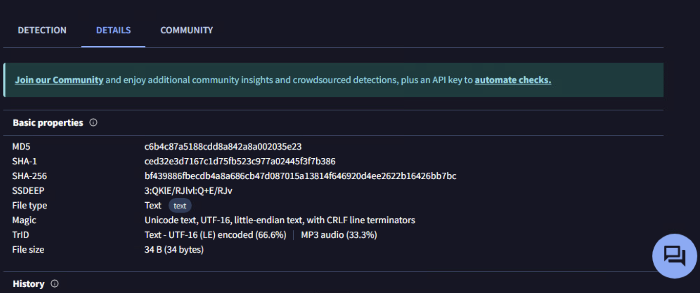
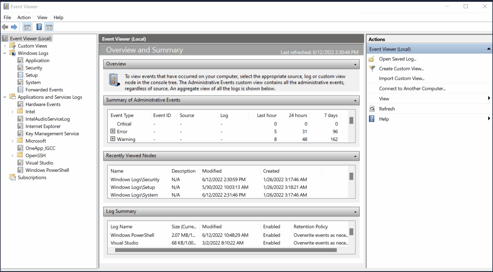
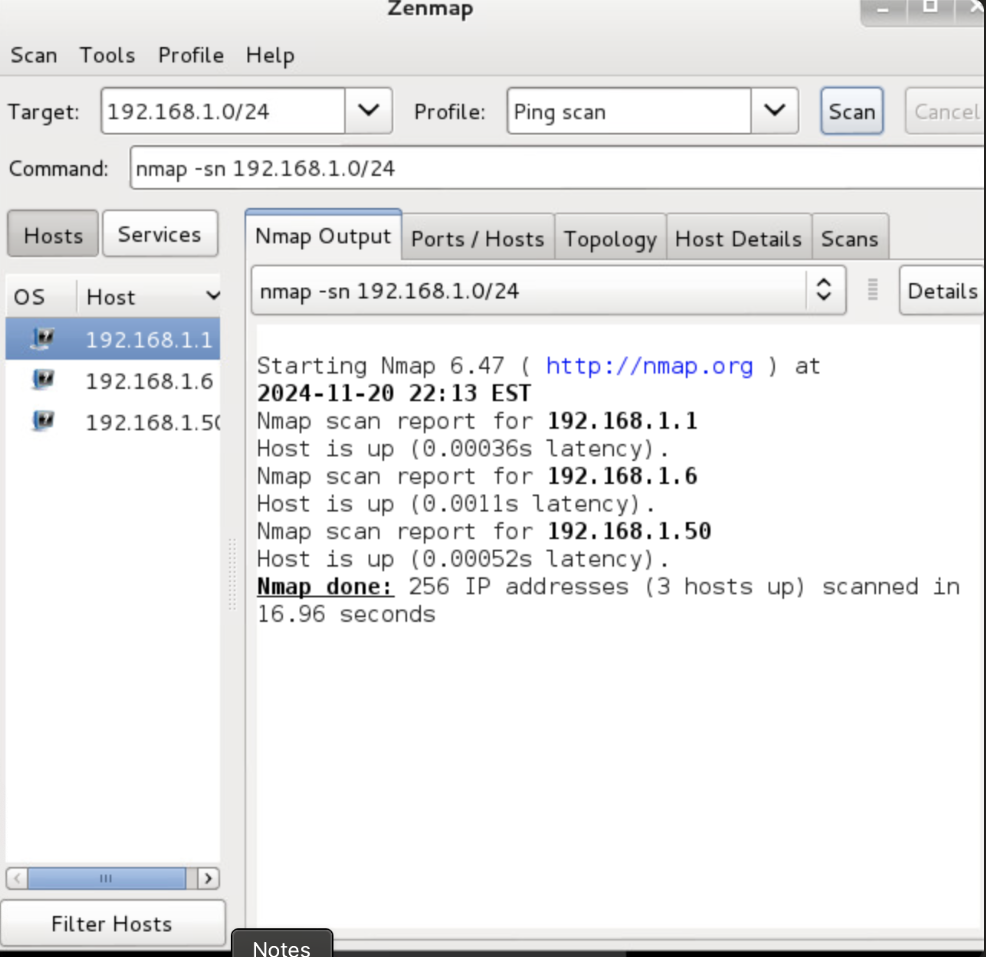
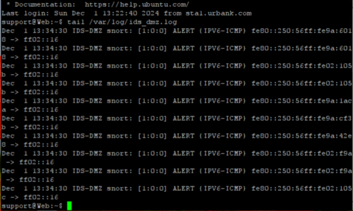
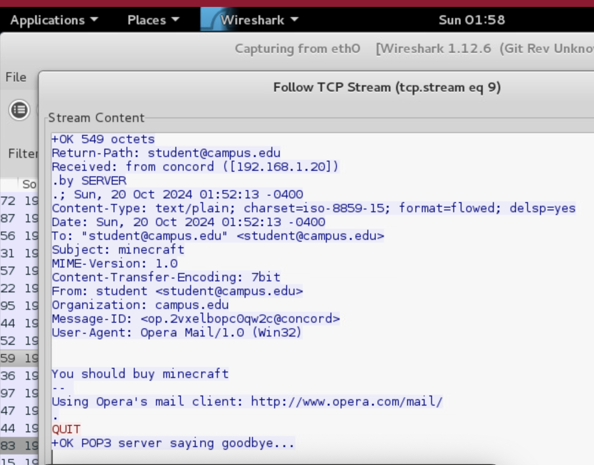

A collection of cybersecurity projects, technical work, research interests, and professional accomplishments.
Technical projects covering threat detection, network security, malware analysis, SIEM, digital forensics, and cybersecurity concepts.
View GitHub →Strategic IT analysis focusing on governance, cybersecurity, AI implementation, risk management, and digital transformation.
View PDF →NIST-based organizational incident response procedures and recovery planning.
View PDF →Security awareness training proposal focused on improving organizational security culture.
View PDF →Research focused on cyberpsychology, behavioral cybersecurity, attachment theory, artificial intelligence, and the impact of technology on human behavior and digital relationships.
Explore Research →
Investigated security events and analyzed logs using Splunk SIEM.
View Full Image →
Investigated VPN logs and analyzed security events using Elastic SIEM.
View Full Image →
Monitored endpoint detections and analyzed security alerts.
View Full Image →
Analyzed file hashes and investigated malware indicators.
View Full Image →
Investigated Windows security logs and event records to identify system events, authentication activity, and security-related events.
View Full Image →
Performed host discovery and network enumeration.
View Full Image →
Monitored intrusion detection alerts and suspicious activity.
View Full Image →
Reconstructed network communications using Follow TCP Stream.
View Full Image →